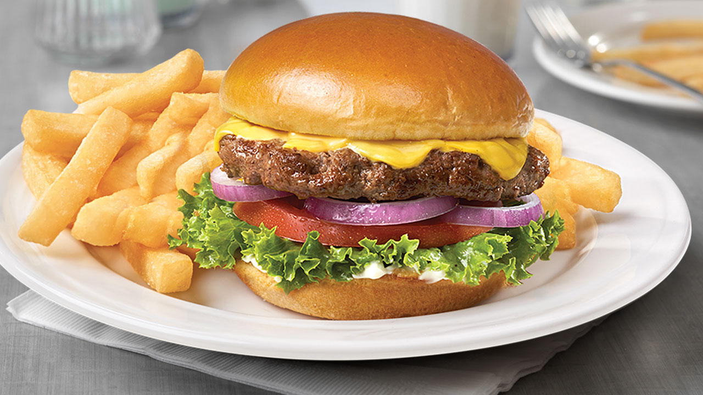

Burger Recipe

Servings: 4 burgers
Total time: 30-40 min
Description
Fast food cheeseburgers can never compare to making your own! Today, I'll be teaching you how to make delicious burgers from
comfort of your own home. Let's get started!
Ingredients
- A pack of store-bought hamburger buns -- any brand will do
- 1 lb ground beef. Don't go lean here! You want as much fat as possible. 85% works well
- Toppings of your choice. Mayo, cheese, lettuce, tomatoes, and onions are good choices
- Master salt (garlic, butter, salt combo)
- Black pepper seasoning
- Optional: Olive oil, cooking spray, or some other method of greasing your spatula.
- ...And that's it! Simple, right?
Instructions
- First things first: fire up your stovetop (this is not a grill recipe) and warm up an empty saucepan over medium heat, big enough to fit four
relatively-thick patties.
- You have two options for seasoning your patties. First, you can season both sides as you're performing the first couple of flips.
Alternatively, you can put all of your hamburger meat into a large mixing bowl now, and mix the seasoning in by hand. Both methods
work well, but if you have time for it, the latter method will result in a better overall taste profile.
- If you're going with option number one, you'll want to begin forming your hamburger meat into separate, consistently-sized balls.
They don't need to be perfectly round, but get as close as you can.
- Next, drop your balls into the pan, evenly spaced apart -- you're going to flatten them in a moment, so make sure they won't touch
too much.
- Allow the meat balls (not meatballs, mind!) to cook on the hot pan for around 10 seconds, then flip the balls over one-by-one using a
greased spatula. Olive oil, butter, or cooking spray work well here, but none of them are absolutely essential.
- Once you've flipped the balls over, immediately press down on each of them with your spatula, using even pressure. You're looking to squish
them enough that they fill out their respective sections of the pan without pushing into eachother too much -- it's okay if there's a little
bit of meat touching. Remember, these will shrink as the fat cooks off!
- Get your seasoning ready, and sprinkle it atop the burger patties -- first the Master Salt, then the black pepper. Sprinkle to your
preference here, but don't go overboard. Most of the flavor is going to come from the burger itself. Wait fifteen seconds, flip,
and repeat the seasoning process.
- Now, for the fun part! Every fifteen seconds or so, you'll want to flip your burger. Everyone has a different preference here, but my
experience has shown me that, to get an evenly-cooked, well-done burger finished in a reasonable amount of time, frequent, consistently-spaced
flips are the way to go. By flipping more frequently, you're ensuring that both sides of the patty cook at roughly the same rate,
and stay warm throughout the cooking process.
-
To be super safe, it's best to use a food thermometer to check the internal temperature of your patties. You're aiming for 125 degrees Fahrenheit.
However, if I'm being honest, I rarely use such a tool for this process. Typically, I just eyeball it, aiming for a total cook time of around 10-15
minutes. Since I like my burgers a little more crispy than most, I usually go for the longer end of that range.
- Once you feel your burgers have been cooked nearly-thoroughly enough, place a slice of cheese atop each patty, and turn the heat down
to medium-low. Your goal now is not to cook the burger any further, but to partially melt the cheese.
- Once the cheese has been melted to your preference, you can remove your patties from the pan and begin assembling them on your bun using
your other toppings.
- If you've opted for method two of seasoning your patties, simple combine all the meat into one large mixing bowl and liberally
sprinkle your seasoning atop. Don't go too crazy here, but feel free to eyeball it. I never measure exactly how much seasoning
I use, because I'm always in the mood for something a little different.
- Then, simply use your hands to knead and mix up the meat. Once you feel it's been well combined enough, proceed with the rest of step 2
onward.